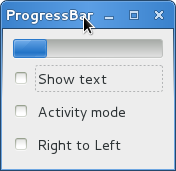

进度条¶
Gtk.ProgressBar 通常用来显示一个较长时间操作的进度信息，它给操作正在
进行中提供了一个视觉的效果。 Gtk.ProgressBar 有两种模式： percentage
mode 和 activity mode 。
当程序知道需要执行的工作的工作量（例如从一个文件读取固定字节数）并且可以监视进度时，
可以使用 Gtk.ProgressBar 的 percentage mode ，这样用户可以看到一个正在前进的进度条
——指示任务完成的百分比，这种模式程序要周期性地调用 Gtk.ProgressBar.set_fraction()
来更新进度条，传递一个介于0和1之间的值表示新的百分比。
当一个程序不知道任务的工作量时，可以使用 activity mode ，这种模式会显示一个
前后移动的进度块显示任务正在进行中。这种模式下，应用程序要周期性地调用
Gtk.ProgressBar.pulse() 来更新进度条，你也可以通过
Gtk.ProgressBar.set_pulse_step() 设置每次进度前进的数量。
默认情况下， Gtk.ProgressBar 水平的从左向右显示进度，但你也可以通过调用
Gtk.ProgressBar.set_orientation() 来改变进度条显示的方向是水平还是竖直。
进度条前进的方向则可以使用 Gtk.ProgressBar.set_inverted() 来改变。
Gtk.ProgressBar 也可以通过
Gtk.ProgressBar.set_text() 和 Gtk.ProgressBar.set_show_text()
来设置显示一些文本信息。
ProgressBar 对象¶
-
class
Gtk.ProgressBar¶ -
set_fraction(fraction)¶ 使进度条 填充 给定百分比的进度。 fraction 应该是在0.0和1.0之间，包含0和1。
-
pulse()¶ 一些进度完成了，但是程序不知道完成了多少时调用此函数使进度条进入 activity mode ，这时会有一个进度滑块前后地移动。每次调用
pulse()使滑块向前移动一点（每次pulse移动的数量由set_pulse_step()来设置）。
-
set_orientation(orientation)¶ 设置进度条显示的方向， orientation 可以是一下其中之一：
Gtk.Orientation.HORIZONTALGtk.Orientation.VERTICAL
-
set_show_text(show_text)¶ 设置是否在进度条上叠加显示一些文本信息。显示的信息或者是 “text” 属性的值（
set_text()设置），或者若其为None，会显示进度的百分比。
-
set_text(text)¶ 使给定的 text 叠加显示到进度条上。
-
set_inverted(inverted)¶ 进度条的方向一般是从左向右前进，inverted使进度条前进的方向翻转。
-
Example¶
1 2 3 4 5 6 7 8 9 10 11 12 13 14 15 16 17 18 19 20 21 22 23 24 25 26 27 28 29 30 31 32 33 34 35 36 37 38 39 40 41 42 43 44 45 46 47 48 49 50 51 52 53 54 55 56 57 58 59 60 61 62 63 64 65 66 67 68 69 70 71 72 | #!/usr/bin/env python
#coding:utf-8
from gi.repository import Gtk, GObject
class ProgressBarWindow(Gtk.Window):
def __init__(self):
Gtk.Window.__init__(self, title='ProgressBar Demo')
self.set_border_width(10)
vbox = Gtk.Box(orientation=Gtk.Orientation.VERTICAL, spacing=6)
self.add(vbox)
self.progressbar = Gtk.ProgressBar()
vbox.pack_start(self.progressbar, True, True, 0)
button = Gtk.CheckButton('Show text')
button.connect('toggled', self.on_show_text_toggled)
vbox.pack_start(button, True, True, 0)
button = Gtk.CheckButton('Activity mode')
button.connect('toggled', self.on_activity_mode_toggled)
vbox.pack_start(button, True, True, 0)
button = Gtk.CheckButton('Right to Left')
button.connect('toggled', self.on_right_to_left_toggled)
vbox.pack_start(button, True, True, 0)
self.timeout_id = GObject.timeout_add(50, self.on_timeout, None)
self.activity_mode = False
def on_show_text_toggled(self, button):
show_text = button.get_active()
if show_text:
text = 'some text'
else:
text = None
self.progressbar.set_text(text)
self.progressbar.set_show_text(show_text)
def on_activity_mode_toggled(self, button):
self.activity_mode = button.get_active()
if self.activity_mode:
self.progressbar.pulse()
else:
self.progressbar.set_fraction(0.0)
def on_right_to_left_toggled(self, button):
value = button.get_active()
self.progressbar.set_inverted(value)
def on_timeout(self, user_data):
'''
Update value on the progress bar
'''
if self.activity_mode:
self.progressbar.pulse()
else:
new_value = self.progressbar.get_fraction()+0.01
if new_value>1:
new_value = 0.0
self.progressbar.set_fraction(new_value)
# time out function, return True so that it will be called continuedly
return True
win = ProgressBarWindow()
win.connect('delete-event', Gtk.main_quit)
win.show_all()
Gtk.main()
|